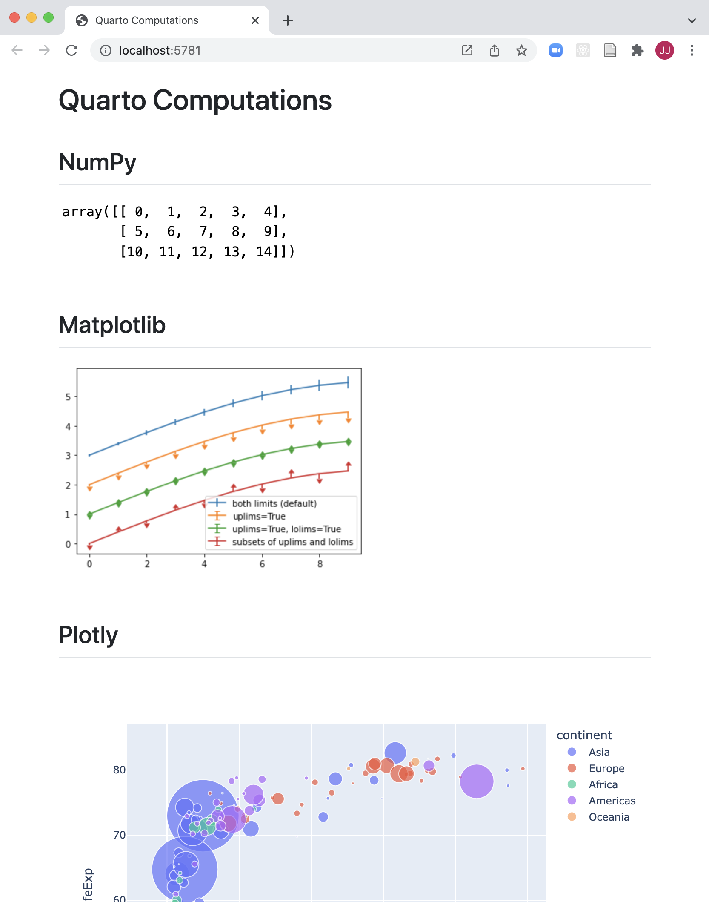
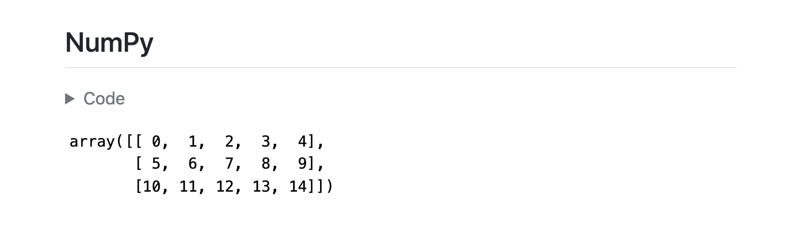

Tutorial: Computations
../_tool-chooser.mdOverview
Quarto has a wide variety of options available for controlling how code and computational output appear within rendered documents. In this tutorial we’ll take a .qmd file that has some numeric output and plots, and cover how to apply these options.
This tutorial will make use of the matplotlib and plotly Python packages. The commands you can use to install them are given in the table below.
| Platform | Commands |
|---|---|
| Mac/Linux | |
| Windows | |
If you want to follow along step-by-step in your own environment, create a computations.qmd file and copy the following content into it.
---
title: Quarto Computations
jupyter: python3
---
## NumPy
```{python}
import numpy as np
a = np.arange(15).reshape(3, 5)
a
```
## Matplotlib
```{python}
import matplotlib.pyplot as plt
fig = plt.figure()
x = np.arange(10)
y = 2.5 * np.sin(x / 20 * np.pi)
yerr = np.linspace(0.05, 0.2, 10)
plt.errorbar(x, y + 3, yerr=yerr, label='both limits (default)')
plt.errorbar(x, y + 2, yerr=yerr, uplims=True, label='uplims=True')
plt.errorbar(x, y + 1, yerr=yerr, uplims=True, lolims=True,
label='uplims=True, lolims=True')
upperlimits = [True, False] * 5
lowerlimits = [False, True] * 5
plt.errorbar(x, y, yerr=yerr, uplims=upperlimits, lolims=lowerlimits,
label='subsets of uplims and lolims')
plt.legend(loc='lower right')
plt.show(fig)
```
## Plotly
```{python}
import plotly.express as px
import plotly.io as pio
gapminder = px.data.gapminder()
gapminder2007 = gapminder.query("year == 2007")
fig = px.scatter(gapminder2007,
x="gdpPercap", y="lifeExp", color="continent",
size="pop", size_max=60,
hover_name="country")
fig.show()
```Then, execute the Quarto: Render command. You can alternatively use the Ctrl+Shift+K keyboard shortcut, or the Render button at the top right of the editor:

Note that on the Mac you should use Cmd rather than Ctrl as the prefix for all Quarto keyboard shortcuts.
Here is what you should see within VS Code:
Cell Execution
As you author a document you may want to execute one or more cells without re-rendering the entire document. You can do this using the Run Cell button above the code cell. Click that button to execute the cell (output is shown side by side in the Jupyter interactive console):

There are a variety of commands and keyboard shortcuts available for executing cells:
| Quarto Command | Keyboard Shortcut |
|---|---|
| Run Current Cell | ⇧⌘ Enter |
| Run Selected Line(s) | ⌘ Enter |
| Run Next Cell | ⌥⌘ N |
| Run Previous Cell | ⌥⌘ P |
| Run All Cells | ⌥⌘ R |
| Run Cells Above | ⇧⌥⌘ P |
| Run Cells Below | ⇧⌥⌘ N |
Cell Output
All of the code in the source file is displayed within the rendered document. However, in some cases, you may want to hide all of the code and just show the output. Let’s go ahead and specify echo: false within the document execute options to prevent code from being printed.
---
title: Quarto Computations
execute:
echo: false
jupyter: python3
---Re-render the document and the preview will update to show the output with no code (remember that you do not need to save the file before rendering, as this happens automatically when you render).

You might want to selectively enable code echo for some cells. To do this add the echo: true cell option. Try this with the NumPy cell.
```{python}
#| echo: true
import numpy as np
a = np.arange(15).reshape(3, 5)
a
```Re-render note that the code is now included for the NumPy cell.

There a large number of other options available for cell output, for example warning to show/hide warnings (which can be especially helpful for package loading messages), include as a catch all for preventing any output (code or results) from being included in output, and error to prevent errors in code execution from halting the rendering of the document (and print the error in the rendered document).
See the Jupyter Cell Options documentation for additional details.
Code Folding
Rather than hiding code entirely, you might want to fold it and allow readers to view it at their discretion. You can do this via the code-fold option. Remove the echo option we previously added and add the code-fold HTML format option.
---
title: Quarto Computations
format:
html:
code-fold: true
jupyter: python3
---Render the document. Now a “Code” widget is available above the output of each cell.

You can also provide global control over code folding. Try adding code-tools: true to the HTML format options.
---
title: Quarto Computations
format:
html:
code-fold: true
code-tools: true
jupyter: python3
---Render the document and you’ll see that a code menu appears at the top right of the document that provides global control over showing and hiding code.
![Rendered version of the computations.qmd document. A new code widget appears on top right of the document. The screenshot shows that the widget is clicked on, which reveals a drop down menu with three choices: Show All Code, Hide All Code, and View Source. In the background is the rendered document. The title is followed by some text, which is followed by a Code widget that would expand if clicked on, which is followed by the output of the code. The Code widgets are folded, so the code is not visible in the rendered document.](images/text-editor-code-tools-preview.png)
Figures
Let’s improve the appearance of our Matplotlib output. It could certainly stand to be wider, and it would be nice to provide a caption and a label for cross-referencing.
Go ahead and modify the Matplotlib cell to include label and fig-cap options as well as a call to fig.set_size_inches() to set a larger figure size with a wider aspect ratio:
```{python}
#| label: fig-limits
#| fig-cap: "Errorbar limit selector"
import matplotlib.pyplot as plt
fig = plt.figure()
fig.set_size_inches(12, 7)
```After re-rendering the document you’ll see the updated plot:

Multiple Figures
The Plotly cell visualizes GDP and life expectancy data from a single year (2007). Let’s plot another year next to it for comparison and add a caption and subcaptions. Since this will produce a wider visualization we’ll also use the column option to lay it out across the entire page rather than being constrained to the body text column.
There are quite a few changes to this cell. Copy and paste this code into computations.qmd if you want to try them locally:
#| label: fig-gapminder
#| fig-cap: Life Expectancy and GDP
#| fig-subcap:
#| - "Gapminder: 1957"
#| - "Gapminder: 2007"
#| layout-ncol: 2
#| column: page
import plotly.express as px
import plotly.io as pio
gapminder = px.data.gapminder()
def gapminder_plot(year):
gapminderYear = gapminder.query("year == " +
str(year))
fig = px.scatter(gapminderYear,
x="gdpPercap", y="lifeExp",
size="pop", size_max=60,
hover_name="country")
fig.show()
gapminder_plot(1957)
gapminder_plot(2007)Render the document and the preview will update as follows:
Let’s discuss some of the new options used here. You’ve seen fig-cap before but we’ve now added a fig-subcap option:
#| fig-cap: Life Expectancy and GDP
#| fig-subcap:
#| - "Gapminder: 1957"
#| - "Gapminder: 2007"For code cells with multiple outputs adding the fig-subcap option enables us to treat them as subfigures.
We also added an option to control how multiple figures are laid out—in this case we specified side-by-side in two columns:
#| layout-ncol: 2If you have 3, 4, or more figures in a panel there are many options available for customizing their layout. See the article Figures for details.
Finally, we added an option to control the span of the page that our figures occupy:
#| column: pageThis allows our figure display to span out beyond the normal body text column. See the documentation on Article Layout to learn about all of the available layout options.
_footer.md